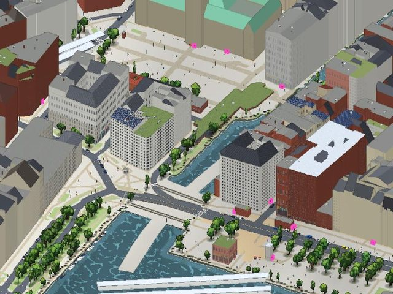
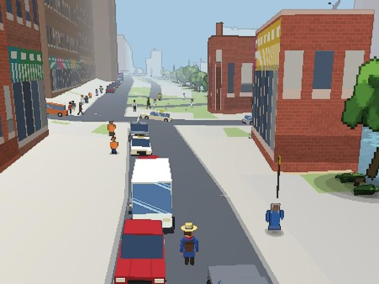
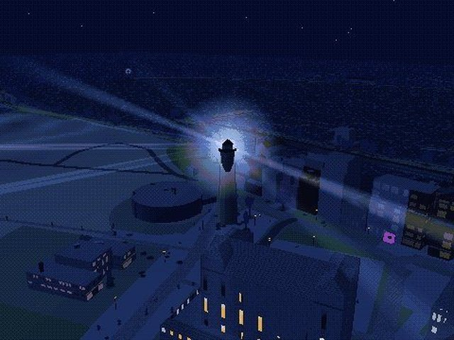
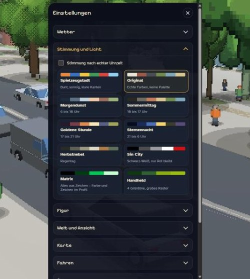
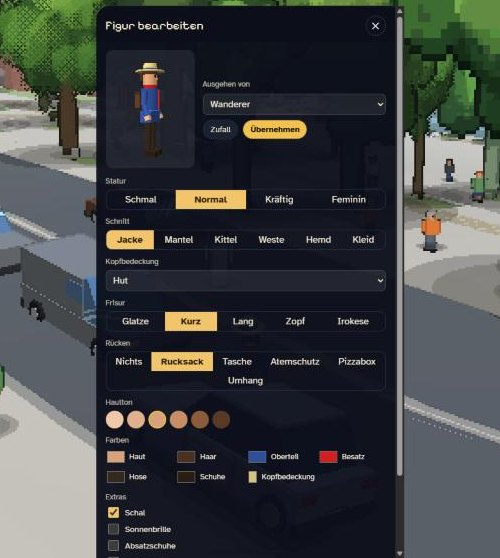
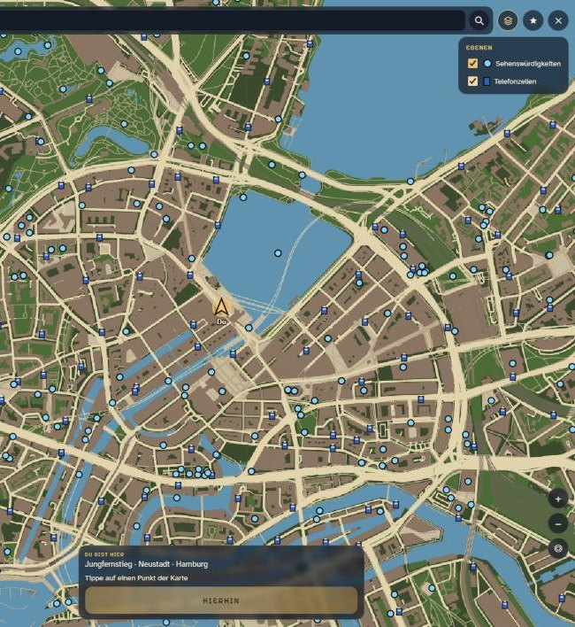

HoodExplorer
Eine begehbare Pixel-Welt für jeden Ort in Deutschland – live im Browser gebaut, nur aus offenen Daten. Diese Seite zeigt, was das Spiel kann und wie es technisch funktioniert.



1. Wie die Daten zusammenfließen
Acht offene Quellen werden für jede Kachel am selben Ort übereinandergelegt. Der Welt-Worker ordnet sie einander zu, wendet die Regeln an und baut die Geometrie; der Haupt-Thread zeichnet und lässt die Stadt leben, ein eigener Worker holt den Nahverkehr.
2. Technik
Architektur
three.js (WebGL)Web Workerstatisch auf GitHub Pages
Die Seite ist rein statisch – kein Server rechnet mit. Ein Hintergrund-Thread lädt die Daten einer Kachel (etwa 1 km), wendet die Regeln an und schickt fertige Dreiecke an die Darstellung. Ein zweiter kleiner Worker holt den Nahverkehr. Die Welt entsteht beim Laufen: neue Kacheln kommen, ferne werden verworfen.
Darstellung
InstancingShaderPixel-Nachbearbeitung
Details entstehen im Shader statt als Geometrie: Fenster und Fassaden, Dachziegel, Feldreihen, Hecken, Wasserwellen, Nässe, Schnee und Licht. Bäume, Autos, Passanten und Tiere sind Instanzen – ein Modell, tausendfach mit einem Aufruf gezeichnet. Eine Nachbearbeitung gibt Pixel-Raster, Kanten und Farbpaletten.
Daten
Vektorkacheln (MVT)eigene BinärkachelnIndexedDB-Cache
Basiskarte als Vektorkacheln, dazu eigene, kleine Binärkacheln mit allem, was die Karte nicht hat: Gebäudefarben, Gebäudearten, Bahnsteige, Sportflächen, Bäume, Laternen, Seezeichen. Ein begrenzter Zwischenspeicher hält Daten für die Rückkehr, ohne das Handy zu füllen.
Vorbereitung
PythonosmiumBlender
Der OpenStreetMap-Auszug für Deutschland wird offline in rund 85 000 Kacheln zerlegt. Figuren, Tiere, Fahrzeuge und Welt-Modelle werden in Blender per Code gebaut und als Atlas oder Modell abgelegt – dieselben Regeln wie im Spiel.
Robust
Rückfall-StufenAusfall-Test
Fehlt eine Quelle oder ist sie gerade nicht erreichbar, nimmt das Spiel die nächste Stufe (z. B. ohne 3D-Gebäude geschätzte Häuser, ohne Gelände flach) und versucht es später erneut. Ein eingebauter Ausfall-Simulator prüft genau das.
Prüfen
StichprobenLuftbild-Vergleich
Ein Aufnahme-Werkzeug fährt Listen zufälliger Orte ab und legt Spielbild und Luftbild nebeneinander. Bewertet wird je Bauart; was oft falsch ist, wird zu einer neuen allgemeinen Regel – keine Einzelfälle.
Was auf dem Bildschirm passiert
Gemessen im Spiel am Hamburger Jungfernstieg, Verfolgerkamera, Fenster 1351 × 1197 Pixel.
gemessen auf einem Desktop-Rechner; auf Handys regelt das Spiel Qualität und Pixelgröße selbst nach
451 × 399 statt 1351 × 1197 – grobes Raster für den Pixel-Look und neunmal weniger Rechenarbeit je Bild
Instancing bündelt tausende gleiche Dinge in einen Aufruf – die wichtigste Bremse auf Handys bleibt klein
Fenster, Dachziegel, Feldreihen, Wellen kosten kein einziges Dreieck – sie entstehen im Shader
Autos, Figuren, Tiere und Ausstattung, jede Art ein Modell, das vielfach gezeichnet wird
als Pixel-Sprites aus 4 Ecken statt ~60; der Wind bewegt sie im Shader, ohne den Prozessor
3D-Gebäude und geschätzte Häuser in 4 Kacheln rund um die Figur; ferne Kacheln werden verworfen
an den Straßenrändern verteilt; gezeichnet werden nur die nächsten, nach Nähe sortiert
bis 40 gleichzeitig, mit Abstand, Abbiegen und Halten – Rechenzeit etwa 0,5 ms je Bild
laufen auf Gehwegen, wechseln ihr Gehbild nach zurückgelegtem Weg
Tauben, Möwen, Fische, Ratten, Katzen je nach Ort – etwa 0,3 ms je Bild
nach Fahrplan und Echtzeit im eigenen Worker, das Spiel rechnet nur die Positionen
Laterne der Figur, Blaulicht und die Bündel der zwei nächsten Leuchttürme – im Licht-Shader, ohne Zusatz-Geometrie
höchstens 5 % des freien Speichers; ältere Kacheln werden automatisch aufgeräumt
3. Regeln statt Einzelfälle
Jede Regel gilt überall in Deutschland. Drei Grundsätze entscheiden, welche Quelle wo gilt:
Vorrang
3D-Gebäude der Länder vor geschätztem Gebäude aus dem Umriss. Ohne 3D-Daten schätzt das Spiel Höhe, Dach und Fassade aus Gebäudeart, Region und Baujahr.
Ersatz
Wo Daten nachweislich nicht passen, übernimmt ein Modell nach festen Regeln – etwa für Kirchen, Hallen, Ruinen, Türme und Mühlen.
Lücken füllen
Fehlt eine Angabe, gilt die nächstbeste: Farbe aus OpenStreetMap → gemessen im Luftbild → regionale Statistik → Epoche aus dem Baujahr.
| Bereich | Wenn … | dann … |
|---|---|---|
| Gebäude | 3D-Daten vorhanden | echte Form; Fenster, Farben und Dachdeckung per Shader |
| Gebäude | nur Umriss | Höhe aus Stockwerken und Art, Dach aus der Region, Fassade aus der Epoche |
| Gelände | Straße unter Bahn oder Straße | Trog mit Stützmauern statt ebener Kreuzung |
| Landschaft | Feld, Friedhof, Wald | Feldblöcke mit Reihen, Grabfelder mit Hecken, Baumdichte aus der Landbedeckung |
| Leben | Platz, Ufer, Gewässer | Tauben auf Plätzen, Möwen am Ufer, Fische im Wasser |
| Licht | Dämmerung oder Nacht | Laternen, erleuchtete Fenster, Leuchtfeuer mit echter Kennung |
4. Einstellungen
Alles, was sich im Spiel einstellen lässt – automatisch aus dem Spiel ausgelesen. Ein Bereich lässt sich aufklappen.



5. Funktionen
Ganz Deutschland aus offenen Daten
Jeden Ort suchen und sofort losgehen: echte Straßen, Gebäude mit echten Dachformen, Gelände mit Brücken und Unterführungen, Flüsse und Seen, Felder, Wälder, Friedhöfe, Kirchen, Burgen und Leuchttürme.
Zu Fuß und am Steuer
Laufen und springen, oder einsteigen: vom Kleinwagen über Handwerker-Transporter, Bus, Müll- und Tankwagen bis zu Streifenwagen, Feuerwehr und Notarzt mit Blaulicht und Sirene. Autopilot fährt gespeicherte Strecken ab.
Lebendige Stadt
Simulierter Verkehr auf echten Straßen mit Einbahnstraßen, Autobahnen, Brücken und Tunneln, echter Nahverkehr nach Fahrplan und Echtzeit (Busse, Straßenbahnen, Züge), parkende Autos, Passanten auf den Gehwegen, Tauben, Möwen, Fische, Ratten und Katzen, Bäume im Wind.
Stimmungen und Wetter
Zehn Stimmungen – Spielzeugstadt, Original, Tageszeiten, Sternennacht, Nebel, Sin City, Matrix, Handheld – und Wetter: Regen, Gewitter, Schnee, Glatteis mit nassen Straßen und Pfützen. Nachts leuchten Laternen, Fenster und Leuchttürme.
Vier Welten
Dieselbe Karte als Heute, Western, Cyberpunk oder Mittelalter: Häuser, Straßen, Passanten und Fahrzeuge folgen den Regeln der jeweiligen Welt.
Figuren
31 Rollen vom Wanderer bis zur Notärztin, dazu ein Figuren-Editor: Statur, Kleidung, Kopfbedeckung, Farben und Gegenstand frei kombinieren.
Ton
Schritte je Untergrund (auch nass, in Pfützen, auf Schnee und Eis), Wasser am Ufer, Regen und Donner, Motor und Reifen, Sirenen – zum großen Teil im Browser berechnet, mit eigener Lautstärke je Bereich.
Karte, Orte und Strecken
Minimap und große Karte mit Ebenen, Ortssuche mit zuletzt besuchten Orten, gespeicherte Orte in Kategorien, Strecken mit Wegpunkten, Telefonzellen.
Sammeln
Münzkisten an Hauseingängen und auf Plätzen; Inventar und Fahrzeugwahl im Spiel.
6. Quellen und Lizenzen
| Daten | Quelle | Lizenz |
|---|---|---|
| Karte, Gebäudeumrisse, Merkmale | OpenStreetMap (OpenFreeMap-Kacheln, Geofabrik-Auszug) | © OpenStreetMap-Mitwirkende, ODbL |
| 3D-Gebäude (LoD2) | basemap.de / BKG | dl-de/by-2-0 |
| Baujahr | Zensus 2022, Statistisches Bundesamt | dl-de/by-2-0 |
| Gelände | Terrain Tiles (Mapzen, AWS Open Data) | SRTM, EU-DEM u. a. |
| Baumdichte | ESA WorldCover 2021 | CC BY 4.0 |
| Luftbilder (nur Dachfarbe gemessen) | Landesvermessungen der Bundesländer | je Land, u. a. dl-de/zero-2.0, dl-de/by-2-0, CC BY 4.0 |
| Nahverkehr (Fahrplan, Echtzeit) | Transitous (offene DELFI-Daten) | freie Nutzung, nicht-kommerziell |